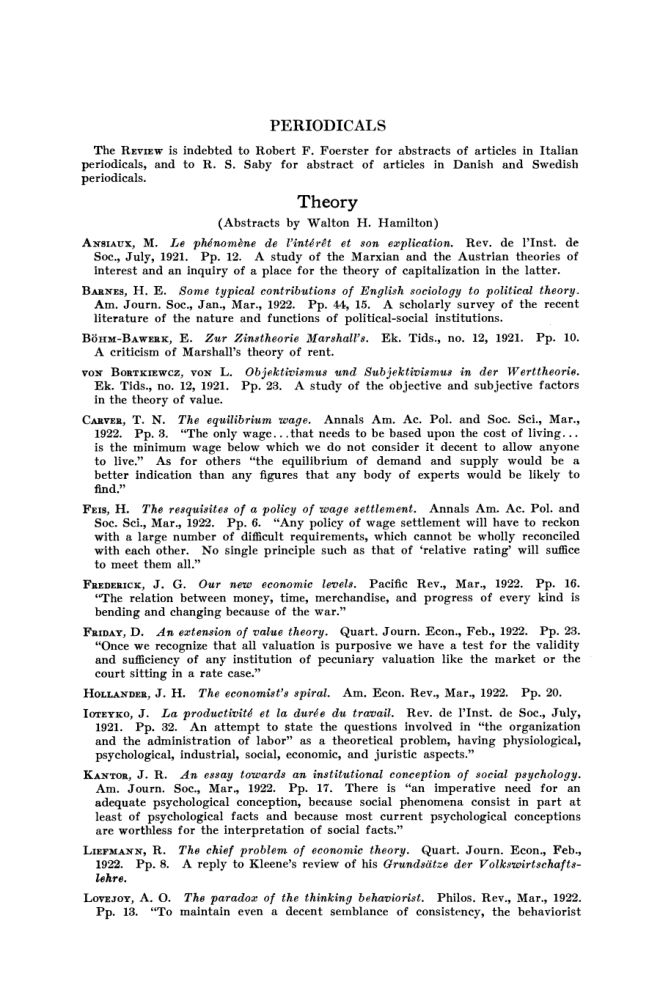

As guildas inglesas, a guerra alemã a crédito e as zonas francas
Leitura: 14 min
Hewes mede dois anos das guildas de construção inglesas; Fairchild, com Rist, reconstitui como a Alemanha pagou a guerra; Feis explica o volume do comércio; Clapp defende zonas francas nos portos americanos.


Em 1º de novembro de 1920, respondendo a perguntas na Câmara dos Comuns, o ministro da Saúde britânico informou que oito contratos entre autoridades locais e guildas de construção, para 1.003 casas, haviam sido aprovados. O dado está no artigo de Amy Hewes, do Mount Holyoke College, que abre a American Economic Review de junho de 1922 e confronta dois anos de prática do socialismo de guilda na Inglaterra com mais de uma década de teoria.
O resto da edição trata de comércio exterior e de finanças de guerra. Herbert Feis, da University of Kansas, pergunta o que determina o volume do comércio de um país. Fred Rogers Fairchild, da Yale University, usa o livro de Charles Rist para reconstituir como a Alemanha financiou a guerra com empréstimos e papel-moeda. Edwin J. Clapp defende zonas francas nos portos americanos, e D. A. MacGibbon, da University of Alberta, pergunta se a classificação oficial de grãos mede a qualidade real do trigo. Fecham o número resenhas, listas de livros novos, resumos de periódicos, documentos oficiais e a décima nona lista de teses de doutorado em andamento.
O que dois anos de prática ensinaram às guildas inglesas?
Amy Hewes (Mount Holyoke College) · “Guild Socialism: A Two Years' Test” · pp. 209–237
Hewes parte de uma inversão. Em geral, diz, um experimento econômico já está em curso quando surge a literatura teórica sobre ele; no caso inglês, oito anos de discussão sobre o Estado guildista precederam a primeira guilda ativa. A autora reconstitui essa literatura: Arthur J. Penty, arquiteto, que em 1906 publicou The Restoration of the Gild System e via no trabalho medieval o modelo perdido; S. G. Hobson, cujos artigos no New Age, a partir de 1912, deram forma ao movimento; e G. D. H. Cole, que em 1915 organizou a National Guilds League e em 1917 expôs sua teoria em Self-Government in Industry, com o Estado como associação de consumidores e a guilda como associação de produtores.
Para Hewes, essa literatura é rica em filosofia política e pobre em análise econômica: discute o controle das indústrias e pouco diz sobre matérias-primas, máquinas ou venda dos produtos. A Liga, por sua vez, dividiu-se em 1920 sobre a atitude diante do regime soviético e terminou 1921 com menos membros e finanças em situação grave.
A parte prática nasce da falta de moradias. Em janeiro de 1920, por sugestão de Hobson, os sindicatos da construção de Manchester criaram uma guilda que oferecia como garantia não capital, mas a oferta de trabalho. O contrato aprovado pelo Ministério da Saúde pagava o custo efetivo de materiais e mão de obra, mais £ 40 por casa para manter o pagamento contínuo dos trabalhadores e 6% do custo estimado para equipamento e administração. A Co-operative Wholesale Society entrou com materiais, crédito e seguro do contrato.
Em 1921 o ministério deixou de aprovar novos contratos nos mesmos termos, e as guildas, que recusaram abrir mão do pagamento contínuo, passaram a obras privadas e se fundiram numa National Building Guild. Hewes registra os resultados que considera estabelecidos, casas mais baratas e bom rendimento do trabalho, mas observa que as guildas começaram em condições excepcionalmente favoráveis e ainda teriam de provar resistência aos altos e baixos dos negócios.
Por que alguns países comerciam mais que outros?
Herbert Feis (University of Kansas) · “What Determines the Volume of a Country's International Trade” · pp. 238–245
Feis deixa de lado vendas de títulos, remessas de imigrantes e outras transações e pergunta apenas o que governa o volume das exportações e importações de mercadorias. Começa pelos princípios, com dois países imaginários, A e B, no padrão-ouro. Se B vende vinho e tecido mais barato, o ouro sai de A, os preços sobem em B e caem em A até que A passe a exportar tecido. Cada país termina exportando aquilo em que tem a maior vantagem comparativa, ou a menor desvantagem, e o fluxo de ouro cessa quando os valores se equilibram.
Sobre essa base o autor enuncia três influências. A primeira é a diferença de eficiência entre as indústrias exportadoras e o resto da economia: quanto mais singulares e marcadas as vantagens das exportadoras sobre as demais indústrias do mesmo país, maior o comércio. Alguns países tropicais, com recursos naturais excepcionais e eficiência geral baixa, estariam nessa situação; os Estados Unidos, onde o trabalho é eficiente em muitos ramos, na posição oposta.
A segunda é a força relativa da demanda por produtos estrangeiros. Um país pequeno como a Suíça, de recursos pouco variados, depende de fora para muito do que deseja e por isso comercia muito. Se todo o carvão da América do Norte ficasse do outro lado da fronteira canadense, raciocina Feis, as importações e exportações americanas seriam maiores. Quem depende de outros para carvão, minério de ferro, grãos ou petróleo carrega, necessariamente, um comércio exterior considerável.
A terceira é o nível geral de produtividade. Se a guerra desorganiza a indústria de B, a renda real cai e B compra menos, ainda que deseje os produtos de A tanto quanto antes; caem as importações e, depois, as exportações. Feis aplica o raciocínio à Europa daquele momento: o trabalho europeu rende pouco, os europeus compram poucas importações e as indústrias exportadoras americanas e inglesas ficam sem mercado. O câmbio, para ele, é aspecto secundário, que se corrigiria se a indústria europeia recuperasse a capacidade de produzir.
“Quão limitada é a medida em que uma nação pode controlar esse volume.” (“how limited is the extent to which any one nation can control that volume.”)
É a reflexão final do artigo: condições fora do alcance de cada país podem pesar mais que todas as suas campanhas cuidadosamente planejadas.
Como a Alemanha pagou a guerra?
Fred Rogers Fairchild (Yale University) · “German War Finance—A Review” · pp. 246–261
Fairchild escreve uma resenha longa de Les Finances de Guerre de l'Allemagne, de Charles Rist, professor da Faculdade de Direito de Paris, e a usa como roteiro para contar as finanças de guerra alemãs. Começa pelos empréstimos. O primeiro saiu em setembro de 1914; depois vieram dois por ano, em março e setembro, até o nono, em setembro e outubro de 1918, diante do colapso militar.
A fonte principal, segundo Rist, não foi a venda de títulos estrangeiros, modesta no caso alemão, mas a poupança normal da guerra. Com o comércio exterior cortado e muitas indústrias de paz paradas, capital e trabalho migraram para as encomendas do Estado, e os lucros de guerra encheram caixas econômicas, cooperativas de crédito e bancos. O Tesouro absorvia essa poupança com letras de curto prazo, descontadas sobretudo no Reichsbank, e a cada seis meses consolidava a dívida flutuante num grande empréstimo.
O elo mais frágil, diz Fairchild, eram as Darlehnskassen, caixas de empréstimo que emprestavam sobre títulos e mercadorias com notas próprias. Essas notas podiam ser contadas pelo Reichsbank como reserva, o que permitia emitir sem romper formalmente a regra de cobertura de um terço. A circulação fiduciária passou de 2.095 milhões de marcos em 23 de julho de 1914 para 27.418 milhões em 7 de novembro de 1918 e 49.628 milhões no fim de 1919, 24 vezes o nível inicial.
A falha maior, para o autor, foi tributária. O plano exposto por Helfferich ao Reichstag em março de 1915 cobria com impostos apenas os juros dos empréstimos; o resto viria de dívida e notas, à espera de vitória rápida e indenização. Fairchild atribui a escolha também à fraqueza constitucional do império, a quem cabiam os impostos indiretos, enquanto os diretos ficavam com os estados. Depois da guerra, o orçamento de 1921 previa déficit de 162 bilhões de marcos, e as notas do Reichsbank chegavam a 115.755 milhões em 15 de fevereiro de 1922.
Uma zona franca faria de Nova York um entreposto mundial?
Edwin J. Clapp (New York City) · “Foreign Trading Zones in our Seaports” · pp. 262–271
Clapp define a zona de comércio exterior como uma parte do porto cercada por barreira alfandegária, com cais e armazéns onde navios descarregam e mercadorias são baldeadas, armazenadas, reembaladas e reexportadas sem fiscalização. Só quando a carga sai para o interior é inspecionada e paga o imposto. A ideia, diz, tinha dez anos nos Estados Unidos e mudou de nome para escapar da acusação de livre-cambismo: porto livre, depois zona franca, enfim zona de comércio exterior.
O modelo é Hamburgo. Para entrar na união aduaneira alemã, que adotara tarifa protecionista em 1879, a cidade criou em 1882 o esquema da zona franca e reconstruiu o porto, com 40 milhões de marcos do império, para preservar a baldeação e a reexportação para o Báltico. A receita não se perdia: os impostos eram cobrados nos poucos pontos de saída da zona.
O primeiro benefício, segundo Clapp, é pouco citado: o giro mais rápido dos navios. Nos portos americanos, cada navio recebe inspetores, a descarga noturna exige fiança e horas extras pagas em dobro, e a carga só deixa o cais depois de pesada e amostrada. Como, em média, 60% do custo operacional de uma viagem estaria nas despesas de terminal, cais livres atrairiam as linhas. O segundo é a reexportação: o regime de armazéns alfandegados proíbe alterar a embalagem original, e um importador de rendas suíças teve de mandar suas caixas a um porto das Índias Ocidentais Britânicas para reembalá-las.
Aos opositores, Clapp responde que a localização americana é menos desfavorável do que parece e que a Europa exportará de qualquer modo, com ou sem zonas. As bases do Exército em Boston, Nova York, Filadélfia, Norfolk, Charleston e Nova Orleans, bastando cercá-las, poderiam virar zonas em poucas semanas. O projeto mais recente no Congresso, nota, omitia o direito de fabricar dentro da zona, que poucos fabricantes americanos teriam como aproveitar.
“A zona franca surge como um farol.” (“the free zone looms up like a beacon.”)
A melhor classificação oficial indica o melhor trigo?
D. A. MacGibbon (The University of Alberta) · “Grain Standardization” · pp. 272–273
A comunicação de MacGibbon responde a um artigo sobre padronização de grãos publicado na Review de junho de 1921, parte de um trabalho lido por H. Bruce Price em Atlantic City em 29 de dezembro de 1920. MacGibbon trata de um aspecto que, diz, o texto publicado não examinou: a suposição de que o grão classificado na categoria mais alta pelos padrões de inspeção seja de fato o mais adequado ao uso econômico.
Para ele, isso não é necessariamente verdade. O clima e a composição do solo podem dar ao grão dureza, cor, volume e peso, todas as aparências que costumam ser tomadas como sinais de qualidade, e ainda assim faltar ao trigo o vigor que faz dele uma matéria-prima de primeira para a moagem. O autor compara com as maçãs: o exemplar mais bonito de uma variedade pode valer menos que outro, menos vistoso, cultivado em outras condições.
A evidência vem dos laboratórios que os grandes moinhos passaram a manter. As companhias analisam o trigo de cada distrito da região fornecedora e, com fichários mantidos por anos, chegam a conclusões firmes sobre a qualidade real do grão de cada lugar, qualquer que seja a classificação oficial. O resultado é que o trigo de alguns distritos é vendido com ágio, mesmo quando a categoria técnica não o justificaria; compradores são enviados a essas áreas, ou os vagões são separados nos pátios ferroviários dos centros de inspeção. Os carregamentos de outros distritos são evitados e seguem, pela classificação oficial, para a exportação ou para moinhos menos atentos.
Daí três problemas. O primeiro é que o sistema de padronização seria grosseiro e não chegaria ao elemento que cria valor no grão. O segundo diz respeito à exportação: se os moinhos escolhem o melhor dos lotes classificados, a reputação do grão exportado do continente pode sofrer; o autor admite não poder estimar a extensão da prática, mas afirma que ela existe. O terceiro é o valor da terra. Em certos distritos, ele depende da capacidade de produzir, ano após ano, trigo de primeira segundo a classificação oficial, e métodos imperfeitos de classificação podem criar valores fictícios.
O que mais há na edição?
Wesley C. Mitchell resenha Risk, Uncertainty and Profit, de Frank H. Knight, cuja contribuição principal, diz, é a distinção entre risco e incerteza; Clyde Olin Fisher, The Ricardian Rent Theory in Early American Economics, de John Roscoe Turner; Victor H. Pelz, Problems in Sales Management, de Harry R. Tosdal; F. E. Wolfe, The Settlement of Wage Disputes, do próprio Herbert Feis; Walter W. Stewart, os cinco volumes de Banking Principles and Practice, de Ray B. Westerfield; Elisha M. Friedman, British War Finance, coordenado por A. H. Gibson e editado por A. W. Kirkaldy; Frank T. Stockton e Rufus S. Tucker, livros de finanças públicas de Merlin Harold Hunter e Robert Jones; G. B. Mangold, obras de Mary E. Richmond e John Lewis Gillin; John Graham Brooks, The Consumers' Cooperative Movement, de Sydney e Beatrice Webb; e G. P. Watkins, o primeiro volume de Income in the United States, do National Bureau of Economic Research. Há ainda resumos de periódicos, documentos oficiais, a décima nona lista de teses de doutorado em andamento e notas, entre elas a de que a reunião anual da associação será em dezembro, em Chicago.
Na minha leitura
Na minha leitura, o número de junho de 1922 confronta planos com registros. Hewes mede a teoria das guildas pelos contratos assinados e pelas casas entregues; Fairchild mede o plano financeiro alemão pela circulação de notas e pelos déficits; MacGibbon mede a classificação oficial do trigo pelo que os laboratórios dos moinhos encontram. Em cada caso, o indicador formal, seja a doutrina, a cobertura de um terço ou a categoria de inspeção, se descola daquilo que deveria medir.
Feis e Clapp tratam do comércio exterior em dois níveis. Feis mostra que o volume de comércio depende de produtividade e de demanda, em boa parte fora do controle de cada país; Clapp propõe uma mudança institucional pequena, uma cerca em torno de um cais, para reduzir custos de terminal e de fiscalização. As duas abordagens se completam: a teoria fixa os limites, e a regra administrativa decide quanto se aproveita dentro deles.
Glossário
- Socialismo de guilda
- proposta de entregar a gestão de cada indústria a associações nacionais de trabalhadores, as guildas, ao lado de um Estado que representa os consumidores.
- Pagamento contínuo
- garantia das guildas de pagar o trabalhador também em mau tempo, feriados e férias curtas.
- Vantagem comparativa
- vantagem relativa de um país na produção de um bem, comparada com as suas outras produções.
- Dívida flutuante
- dívida pública de curto prazo, como as letras do Tesouro, renovada continuamente.
- Darlehnskassen
- caixas de empréstimo alemãs que emprestavam sobre títulos e mercadorias com notas próprias.
- Zona franca
- área do porto fora da fronteira alfandegária, onde a mercadoria circula sem fiscalização até entrar no país.
- Armazém alfandegado
- depósito sob controle aduaneiro em que a mercadoria fica sem pagar imposto até ser retirada.
- Drawback
- devolução do imposto de importação pago sobre mercadoria depois reexportada.
- Mercado de consignação
- praça onde produtores enviam mercadoria para ser vendida por corretores locais, como Londres.
Artigos (5)
- Guild Socialism: A Two Years' Test — Amy Hewes (Mount Holyoke College) (pp. 209–237) · resenha acima · comentário completo · JSTOR
- What Determines the Volume of a Country's International Trade — Herbert Feis (University of Kansas) (pp. 238–245) · resenha acima · JSTOR
- German War Finance--A Review — Fred Rogers Fairchild (Yale University) (pp. 246–261) · resenha acima · comentário completo · JSTOR
- Foreign Trading Zones in our Seaports — Edwin J. Clapp (New York City) (pp. 262–271) · resenha acima · JSTOR
- Grain Standardization — D. A. MacGibbon (The University of Alberta) (pp. 272–273) · resenha acima · JSTOR
Resenhas (12)
- Risk, Uncertainty and Profit, de Frank H. Knight — Wesley C. Mitchell (pp. 274–275). Resenha que aponta como contribuição principal do livro a distinção entre risco e incerteza. JSTOR
- The Ricardian Rent Theory in Early American Economics, de John Roscoe Turner — Clyde Olin Fisher (pp. 275–278). Resenha do estudo sobre a recepção da teoria ricardiana da renda pelos primeiros economistas americanos. JSTOR
- Problems in Sales Management, de Harry R. Tosdal — Victor H. Pelz (pp. 292–295). Resenha de um manual de casos de administração de vendas. JSTOR
- The Settlement of Wage Disputes, de Herbert Feis — F. E. Wolfe (pp. 304–307). Resenha do livro que propõe um sistema uniforme de solução de disputas salariais nas principais indústrias. JSTOR
- Banking Principles and Practice, de Ray B. Westerfield — Walter W. Stewart (pp. 309–312). Resenha da obra em cinco volumes sobre moeda, crédito e prática bancária. JSTOR
- British War Finance During and After the War 1914-1921, coordenado por A. H. Gibson e editado por A. W. Kirkaldy — Elisha M. Friedman (pp. 313–316). Resenha do levantamento sobre as finanças de guerra britânicas feito por um comitê da British Association. JSTOR
- Outlines of Public Finance, de Merlin Harold Hunter — Frank T. Stockton (pp. 320–321). Resenha de um manual introdutório de finanças públicas. JSTOR
- Taxation, Yesterday and Tomorrow, de Robert Jones — Rufus S. Tucker (pp. 321–322). Resenha de um pequeno livro inglês sobre tributação. JSTOR
- What is Social Case Work?, de Mary E. Richmond — G. B. Mangold (pp. 327–328). Resenha de uma descrição introdutória do serviço social de casos. JSTOR
- Poverty and Dependency: Their Relief and Prevention, de John Lewis Gillin — George B. Mangold (pp. 334–336). Resenha de um tratado sobre a assistência e a prevenção da pobreza. JSTOR
- The Consumers' Cooperative Movement, de Sydney e Beatrice Webb — John Graham Brooks (pp. 337–338). Resenha do estudo dos Webb sobre o cooperativismo de consumo. JSTOR
- Income in the United States, its Amount and Distribution, 1909-1919, vol. I, do National Bureau of Economic Research — G. P. Watkins (pp. 341–343). Resenha do resumo da estimativa da renda americana feita por Mitchell, King, Macaulay e Knauth. JSTOR
Novos livros (15)
- New Books (pp. 278–282). Lista de livros novos: obras gerais, teoria e sua história. JSTOR
- New Books (pp. 282–285). Lista de livros novos: história econômica e geografia. JSTOR
- New Books (pp. 285–288). Lista de livros novos: agricultura, mineração, florestas e pesca. JSTOR
- New Books (pp. 288–291). Lista de livros novos: transportes e comunicações. JSTOR
- New Books (pp. 291–292). Lista de livros novos: comércio e crises comerciais. JSTOR
- New Books (pp. 295–303). Lista de livros novos: contabilidade, métodos comerciais, investimentos e bolsas. JSTOR
- New Books (pp. 303–304). Lista de livros novos: capital e organização capitalista. JSTOR
- New Books (pp. 307–309). Lista de livros novos: trabalho e organizações trabalhistas. JSTOR
- New Books (pp. 316–320). Lista de livros novos: moeda, preços, crédito e bancos. JSTOR
- New Books (pp. 323–327). Lista de livros novos: finanças públicas, tributação e tarifas; população e migração. JSTOR
- New Books (pp. 328–332). Lista de livros novos: problemas sociais e reformas. JSTOR
- New Books (pp. 332–334). Lista de livros novos: seguros e pensões. JSTOR
- New Books (pp. 336–337). Lista de livros novos: pauperismo, caridade e medidas de assistência. JSTOR
- New Books (pp. 339–340). Lista de livros novos: socialismo e empreendimentos cooperativos. JSTOR
- New Books (pp. 343–345). Lista de livros novos: estatística e seus métodos. JSTOR
Documentos, periódicos e notas (4)
- Periodicals (pp. 346–375). Resumos de artigos de periódicos, por área. JSTOR
- Documents, Reports, and Legislation (pp. 376–379). Documentos, relatórios e legislação, a começar pelas publicações da Tariff Commission. JSTOR
- Nineteenth List of Doctoral Dissertations in Political Economy in Progress in American Universities and Colleges (pp. 380–392). Décima nona lista de teses de doutorado em economia política em andamento nas universidades americanas. JSTOR
- Notes (pp. 393–400). Notas da associação: reunião anual de dezembro em Chicago e novos membros. JSTOR
Fontes
- Guild Socialism: A Two Years' Test (pp. 209–237). JSTOR · Internet Archive (PDF)
- What Determines the Volume of a Country's International Trade (pp. 238–245). JSTOR · Internet Archive (PDF)
- German War Finance--A Review (pp. 246–261). JSTOR · Internet Archive (PDF)
- Foreign Trading Zones in our Seaports (pp. 262–271). JSTOR · Internet Archive (PDF)
- Grain Standardization (pp. 272–273). JSTOR · Internet Archive (PDF)
- [untitled] The American Economic Review, (1922-06-01), pages 274-275 (pp. 274–275). JSTOR · Internet Archive (PDF)
- [untitled] The American Economic Review, (1922-06-01), pages 275-278 (pp. 275–278). JSTOR · Internet Archive (PDF)
- New Books (pp. 278–282). JSTOR · Internet Archive (PDF)
- New Books (pp. 282–285). JSTOR · Internet Archive (PDF)
- New Books (pp. 285–288). JSTOR · Internet Archive (PDF)
- New Books (pp. 288–291). JSTOR · Internet Archive (PDF)
- New Books (pp. 291–292). JSTOR · Internet Archive (PDF)
- [untitled] The American Economic Review, (1922-06-01), pages 292-295 (pp. 292–295). JSTOR · Internet Archive (PDF)
- New Books (pp. 295–303). JSTOR · Internet Archive (PDF)
- New Books (pp. 303–304). JSTOR · Internet Archive (PDF)
- [untitled] The American Economic Review, (1922-06-01), pages 304-307 (pp. 304–307). JSTOR · Internet Archive (PDF)
- New Books (pp. 307–309). JSTOR · Internet Archive (PDF)
- [untitled] The American Economic Review, (1922-06-01), pages 309-312 (pp. 309–312). JSTOR · Internet Archive (PDF)
- [untitled] The American Economic Review, (1922-06-01), pages 313-316 (pp. 313–316). JSTOR · Internet Archive (PDF)
- New Books (pp. 316–320). JSTOR · Internet Archive (PDF)
- [untitled] The American Economic Review, (1922-06-01), pages 320-321 (pp. 320–321). JSTOR · Internet Archive (PDF)
- [untitled] The American Economic Review, (1922-06-01), pages 321-322 (pp. 321–322). JSTOR · Internet Archive (PDF)
- New Books (pp. 323–327). JSTOR · Internet Archive (PDF)
- [untitled] The American Economic Review, (1922-06-01), pages 327-328 (pp. 327–328). JSTOR · Internet Archive (PDF)
- New Books (pp. 328–332). JSTOR · Internet Archive (PDF)
- New Books (pp. 332–334). JSTOR · Internet Archive (PDF)
- [untitled] The American Economic Review, (1922-06-01), pages 334-336 (pp. 334–336). JSTOR · Internet Archive (PDF)
- New Books (pp. 336–337). JSTOR · Internet Archive (PDF)
- [untitled] The American Economic Review, (1922-06-01), pages 337-338 (pp. 337–338). JSTOR · Internet Archive (PDF)
- New Books (pp. 339–340). JSTOR · Internet Archive (PDF)
- [untitled] The American Economic Review, (1922-06-01), pages 341-343 (pp. 341–343). JSTOR · Internet Archive (PDF)
- New Books (pp. 343–345). JSTOR · Internet Archive (PDF)
- Periodicals (pp. 346–375). JSTOR · Internet Archive (PDF)
- Documents, Reports, and Legislation (pp. 376–379). JSTOR · Internet Archive (PDF)
- Nineteenth List of Doctoral Dissertations in Political Economy in Progress in American Universities and Colleges (pp. 380–392). JSTOR · Internet Archive (PDF)
- Notes (pp. 393–400). JSTOR · Internet Archive (PDF)
- Sumário da edição no JSTOR: The American Economic Review, vol. 12, nº 2.
Documento em domínio público (EUA, publicado antes de 1931), via JSTOR Early Journal Content e Internet Archive. Resumo e comentário do autor deste site, sem afiliação com a American Economic Association. Encontrou um erro? Escreva: a correção é publicada no próprio texto, com data.
← Nº 175 · Pittsburgh, 1921: a crise de 1920 e a ambição de domar o ciclo Nº 177 · Manual de 1922: New Haven, seiscentos assinantes e Viena de volta →